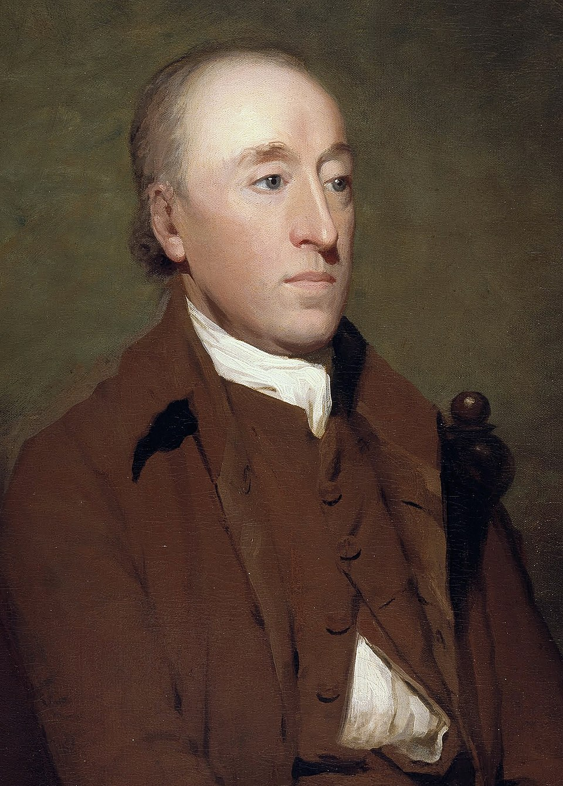
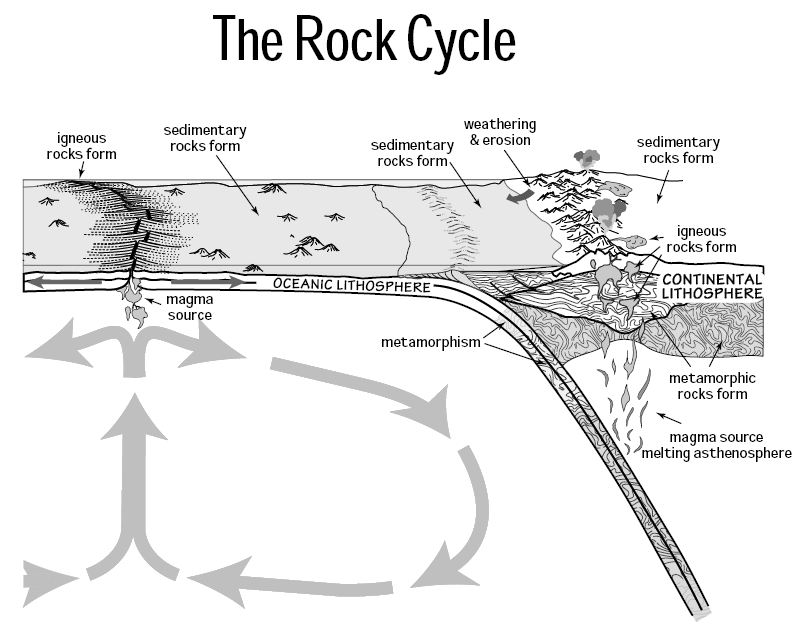

La geologia è la scienza che tratta della composizione, della struttura e della storia evolutiva degli strati interni ed esterni della Terra, e dei processi che l'hanno plasmata.
Non si limita alla descrizione: oltre a classificare ciò che si osserva (una roccia, una catena montuosa), la geologia spiega perché quell'oggetto ha quelle caratteristiche e qual è il processo genetico che lo ha formato.
Hutton introdusse il plutonismo: le rocce si formano per consolidamento del magma (da Plutone, dio degli inferi). Si opponeva al nettunismo, che attribuiva origine divina (Nettuno) alla formazione delle rocce.
L'attualismo creò un acceso dibattito sull'età della Terra. Tre posizioni:
La diatriba si risolse con la scoperta della radioattività, che fornisce una fonte di calore interna che Kelvin non poteva conoscere.
Principio cardine della geologia: i processi che osserviamo oggi (erosione, sedimentazione, terremoti, vulcanismo) sono gli stessi che hanno operato nel passato. Possiamo usare le velocità attuali per ricostruire la storia geologica («il presente è la chiave del passato»).
L'attualismo si oppone al catastrofismo (eventi improvvisi e unici) e al creazionismo (le specie create dal nulla).
Il metodo scientifico richiede che una teoria sia oggettiva, affidabile e verificabile. L'esperimento deve essere ripetibile: se eseguito a Camerino e poi in Giappone, deve produrre lo stesso risultato. Non basta che funzioni in un solo laboratorio.
Padri del metodo: Aristotele → Tommaso d'Aquino → Leonardo da Vinci → Kant → Galileo Galilei (metodo galileiano/induttivo) → Einstein (relatività generale).
Il metodo scientifico (o metodo galileiano / induttivo) si articola in step:
Il travertino (CaCO₃), materiale lapideo ampiamente usato in architettura, con il tempo si ossida formando una patina scura. Questa alterazione dipende da tre fattori interagenti:
Ecco l'interazione tra le tre componenti del sistema Gaia applicata alla conservazione dei beni culturali.
Proposta da James Lovelock, considera il pianeta Terra come un unico sistema integrato in cui le componenti minerale, vegetale e animale interagiscono fortemente. Il pianeta mostra proprietà simili a quelle di un organismo vivente: omeostasi, autoregolazione, retroazione.
All'inizio del '900, Alfred Wegener pubblicò la teoria della deriva dei continenti, mettendo insieme evidenze già esistenti:
I due punti deboli della sua teoria: (1) all'epoca non era dimostrabile il movimento dei continenti; (2) Wegener non aveva una spiegazione convincente su chi spostasse i continenti.
La grande svolta arrivò dopo la Seconda Guerra Mondiale, con l'avvento della tecnologia (sonar, magnetometri, GPS), portando alla moderna tettonica delle placche.

Ritratto di James Hutton (1726–1797): padre della geologia moderna, formulò il principio dell'Uniformitarianismo.

Diagramma del ciclo litogenetico (NPS): processi che collegano rocce ignee, sedimentarie e metamorfiche.